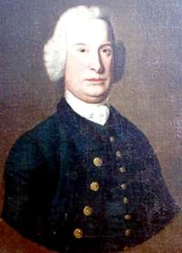

by
Stefan Bielinski
Newcomer merchant David Edgar probably was born in Ireland about 1720. He was of Scottish ancestry.
On January 30, 1753, he was married to Jane Gregg at the Rosemary Street Presbyterian Church in Belfast. They came to America and settled in Albany during the Seven Years War. These Edgars had at least four children including future Albany resident Gregg Edgar.
In 1762, David Edgar was an elder and one of the founding members of the Albany Presbyterian church. By that time, legal papers identified him as a merchant in Albany.
His business involved a partnership with his brother, William Edgar, and possibly John Macomb. It was anchored in Montreal, Detroit (where David Edgar voted in 1768), and Albany. David Edgar appeared to be the Albany operative as he sold imported items to frontier customers including Sir William Johnson. During the 1760s and '70s, he was characterized as an "Indian trader," kept boarders in his Albany home, and was an agent for several frontier enterproises!
In 1766, his first ward home was listed on the Albany assessment roll. The next year, his assessment was in the top five percent of the community.
In 1771, he joined a number of other Albany men as a partner in Bayard's Patent in what is today Herkimer County. Later that year, David Edgar witnessed the will of an Albany Irishman and was identified as "of New York." Perhaps this individual had dual residences.
In 1766, he signed the constitution of the Albany Sons of Liberty. He was elected to the Albany Committee of Correspondence in March 1775 and later contributed to the revolutionary movement.
David Edgar died in September 1776 leaving substantial property. He had lived in Albany for more than twenty years. His widow and children lived in Albany for many years after.
notes
Detail of a copy of a portrait by Thomas Mc Ilworth.
 Sources: The life of David Edgar/Edger/Adger
is CAP biography number 7917. This profile
is derived chiefly from family and community-based
resources. His contemporary was David Alger/Ager of Claverack!
Sources: The life of David Edgar/Edger/Adger
is CAP biography number 7917. This profile
is derived chiefly from family and community-based
resources. His contemporary was David Alger/Ager of Claverack!
first posted: 4/30/03; updated 10/15/11